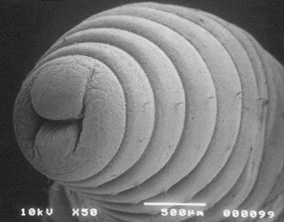
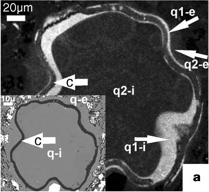

Incident beam collises with electrons of the elements inside the sample and creates SE, BSE and X-rays
Electron-sample interactions
(by Darrell Henry, Louisiana State University)
Depending on incident energy of electron beam, a variety of electrons, X-rays, light and heat are emitted
Several of these interactions are used for imaging, semi-quantitative analysis and/or quantitation analysis.
The interaction volume
(by Darrell Henry, Louisiana State University)
Signals used for imaging or X-ray generation are generated from different electron interaction volumes => each of the signals
has different imaging or analytical resolution.
The interaction volume
(by Darrell Henry, Louisiana State University)
Auger and Secondary images have the best imaging resolution, being generated in the smallest volume near the surface of
the sample.
The interaction volume
(by Darrell Henry, Louisiana State University)
Backscattered electrons are generated over a larger volume resulting in images of intermediate resolution.
The interaction volume
(by Darrell Henry, Louisiana State University)
Cathodoluminescence is generated over the largest volume, even larger than Bremsstrahlung radiation, resulting in images
with the poorest resolution.
SEM-CL of quartz
The interaction volume
a shape that ranges from a tear-drop to a semi circle within the specimen
its depth and diameter depends on: kV and density of specimen
The interaction volume
Interaction volume: extends from less than 100 nm to approximately 5 µm into the surface
Secundary Electrons (SE)
Generated from the collision between the incoming electrons and the loosely bounded outer electrons
Low energy electrons (~10-50 eV)
Only SE generate close to the surface escape (topographic info)
differentiation between SE1 and SE2
Secondary electron detectors are common in all SEMs, but it is rare that a single machine would have detectors for all
possible signals. Secondary electrons are produced when an incident electron excites an electron in the sample and loses
some of its energy in the process. The excited electron moves towards the surface of the sample undergoing elastic and
inelastic collisions until it reaches the surface. Here it can escape if its energy exceeds the surface work function,
Ew, which defines the amount of energy needed to remove electrons from the surface of a material. One of the major reasons
for coating a non-conductive specimen with conductive materials is to increase the number of secondary electrons that
will be emitted from the sample (decrease Ew).
SE1
The SE that are generated by the incoming electron beam as they enter the surface
High resolution signal with a resolution which is only limited by the electron beam diameter
The mean free path length of secondary electrons in many materials is ~1 nm (10 Å). Thus, although electrons are generated
throughout the region excited by the incident beam, only those electrons that originate less than 1 nm deep in the sample
escape to be detected as secondary electrons. This volume of production is very small compared with BSE and X-rays. Therefore,
the resolution using SE is better than either of these and is effectively the same as the electron beam size. The shallow
depth of production of detected secondary electrons makes them very sensitive to topography (Fig. 41b).
SE2
The SE that are generated by the backscattered electrons that have returned to the surface after several inelastic scattering
events
SE2 come from a surface area that is bigger than the spot ffrom the incoming electrons => resolution is poorer than for
SE1 exclusively
In the most common or standard detection mode, secondary electron imaging or SEI, the SEM can produce very high-resolution
images of a sample surface, revealing details about less than 1 to 5 nm in size (Fig. 43). In order to obtain SE images,
the samples need to be dry and coated with gold or carbon (in order to be electrically conductive) and a SE detector needs
to be present.
Figure 43: Typical SE images (from left to right: quartz grains inside Bray sandstone; consolidated Maastricht limestone
and Savonnieres limestone)
Due to the low energies of secondary electrons (SE) (~2 to 50 eV) they are ejected only from near-surface layers. Therefore,
secondary electron imaging (SEI) is ideal for recording topographical information. To attract (collect) these low-energy
electrons, a small bias (usually around +200 to 300V) is applied to the cage at the front end of the detector to attract
the negative electrons towards the detector (Fig. 44). A higher kV (e.g. 7 to 12kV) is applied inside the cage i.e. to
the scintillator, to accelerate the electrons into the scintillator screen.
Figure 44: Secondary electron detector (SED) – Everhart-Thornley Detector
Factors that affect SE emission
Working distance (= the distance between the final condenser lens and the specimen): a short working distance is optimal
for high-resolution SE imaging
WD has an influence on the spherical aberration (= the failure of the lens system to image central and peripheral electrons
at the same focal point).
A: spherical abberation, B: no spherical abberation
Factors that affect SE emission
A diatom imaged using different WD’s.
Bar is 5µm, Magnification = x 3300, Acceleration Voltage = 5kV
A: At a longer working distance (WD = 48mm) spherical aberration is present decreasing resolutionB: At a shorter working distance (WD = 8) the effect of spherical aberration is less resulting in an image with improved
resolution
Factors that affect SE emission
Working distance
beam energy and beam current
Electron yield goes through a maximum at low incident electron energy/kV and then decreases with increasing incident electron
energy/kV
Factors that affect SE emission
a higher accelerating voltage will increase secondary yield from all parts of the specimen due to a greater beam penetration
=> reduction of the edge effect and therefore a diminishing effect on contrast
Diatom imaged using different accelerating voltages.
Bar is 1µm, Magnification = x 4000, Working Distance = 8mm
A:Fine detail imaged at low accelerating voltage of 5kV is visibleB: A decrease in resolution and contrast when diatom is imaged using a much higher accelerating voltage (20kV)
Factors that affect SE emission
Working distance
beam energy and beam current
Atomic number (Z)
More SE2 are created with increasing Z
The Z-dependence is more prnounced at lower beam energies
The local curvature of the surface (the most important factor)
Typical SEM SE images

SE images
SE images are used for morphological details in the sample and give a feeling of depth
SE images
Backscattered Electrons (BSE)
A fraction of the incident electons is retarded by the elctro-magnetic field of the nucleus and if the scattering angle
is greater than 180° the electron can escape fom the surface.
Back-scattered electrons (BSE) are beam electrons that are reflected from the sample by elastic scattering. Some amount
of inelastic scattering does occur so energies are slightly less than the incident beam. Backscattered electrons (BSE)
are high energy primary electrons that suffer large angle (> 90°) scattering and re-emerge from the entry surface of a
specimen. Most BSE have energies slightly lower than that of the primary electron beam, E0, but may have energies as low
as ~50 eV (the upper cut-off for secondary electrons, SE emission is due to inelastic interactions.) (Fig. 45a).
Figure 45: a) Electron Energy Spectrum. Secondary electrons (SE) form a large low-energy peak. Auger electrons (AE) produce
relatively small peaks on the backscattered electron (BSE) distribution (Figure after Goldstein et al. 1981) ;b) Typical
BSE images of polished Bray sandstone (bright white spots are iron-rich minerals next to quartz grains); c) Example of
a spectrum obtained during EDX analysis
Factors that affect BSE emission
Direction of the irritated surface
average atomic number
When you want to study differences in atomic numbers the sample should be as levelled as possible
The fraction of beam electrons backscattered from a sample, nb (also symbolized η), depends strongly on the sample's average
atomic number, Z, reflecting the increasing charge of the atomic nuclei. Individual scattering events are generally elastic,
where a negligible amount of energy is lost by the primary electron in the process. The direction of the electron may
be altered, but its energy remains essentially the same.
BSE images
polished surfaces are ideal
give information based on the atomic number of the elements in hte sample
white structures = high atomic number
dark structures = low atomic number
BSE (Fig. 45b) are often used in analytical SEM along with the spectra made from the characteristic X-rays (Fig. 45c).
Because the intensity of the BSE signal is strongly related to the atomic number (Z) of the specimen, BSE images can provide
information about the distribution of different elements in the sample. In order to detect the BSE, a BSE detector (BSD)
is needed in the SEM (Fig. 46). The BSD is mounted below the objective lens pole piece and centered around the optic axis.
As the specimen surface is scanned by the incident electron beam, backscattered electrons (BSE) are generated, the yield
of which is controlled by the topographical, physical and chemical characteristics of the sample.
BSE images
Intensity of BSE signal proportional to the average atomic number (AAN) of the specimen, e.g., Gold has a relatively high
AAN of 79.0 and appears bright, compared to Quartz (SiO2) which has a low AAN of 10.8 and appears dark
SEIBEI
Fossil inside a tertiary limestone
X-rays
Bombardment of material by electrons produces X-rays by 2 mechanisms:
A smooth continuous spectrum (= bremsstrahlung): produced by electrons interacting with atomic nuclei
A characteristic spectrum: contains lines that result from electron transitions between energy levels that are specific
to each element
Characteristic X-rays are emitted when the electron beam removes an inner shell electron from the sample, causing a higher
energy electron to fill the shell and release energy. These characteristic X-rays are used to identify the composition
and measure the abundance of elements in the sample.
X-rays
X-rays
Photons, not electrons
Each element has a fingerprint X-ray signal
Poorer saptial resolution than BSE and SE
Relatively few X-rays are emitted and the detector is inefficient => longer collection times
X-rays
Most common spectrometer: EDS (Energy-Dispersive Spectrometer)
Signal overlap can be a problem
Different analysis modes possible:
spot analysis
line scan
Chemical concentration map (elemental mapping)
Energy-dispersive X-ray spectroscopy (EDS or EDX) is an analytical technique used for the elemental analysis or chemical
characterization of a sample. It is one of the variants of X-ray fluorescence spectroscopy which relies on the investigation
of a sample through interactions between electromagnetic radiation and matter, analyzing X-rays emitted by the matter
in response to being hit with charged particles. Its characterization capabilities are due in large part to the fundamental
principle that each element has a unique atomic structure allowing X-rays that are characteristic of an element's atomic
structure to be identified uniquely from one another. By means of EDX it is possible to perform point analysis, line scans
and point mappings.
EDS Signal of an image
Spot Analysis
EDX images
By using EDX analysis (energy dispersive X-rays) element analysis can be performed
X-rays produced from a certain element are characteristic for this element and can be used for its identification.
Figure 47 illustrates a back scattered image together with the mapping of several elements, including Ca, Fe, Si, Na and
Ti. The SEM is usually a strictly monochromatic imaging tool, but colour may be introduced based on X-ray energy or backscattered
electron energy. Figure 49b shows individual gray scale images from the X-ray signals from a mineral sample imaged in
the SEM after scanning in a raster pattern (fig. 48). The X-ray images show the variation in composition of the sample
for each of nine elements (Al, Ca, Fe, K, Mg, Na, O, Si, Ti). There are more individual images than the three red, green,
and blue display channels, and no obvious “correct” choice for assigning colours to elements. Figure 49a shows a few possibilities,
but it is important to keep in mind that no single colour image can show all of the elements at once. Assigning several
of these arbitrarily, e.g., to the red, green, and blue planes of a display, may aid the user in judging the alignment
of regions and areas containing two or more elements.
Figure 47: BSE image of polished concrete with point mappings of several elementsFigure 48: a SEM can focuses a fine beam of electrons on the specimen, producing various signals which may be used for
imaging as the beam is scanned in a raster patternFigure 49: A. Composite colour images made by assigning various images from B to the red, green, or blue channels of the
display. This can assist in the delineation of the various minerals.
EDX images
By using EDX it is possible to do point analysis, line scanning and point mapping. This allows us to determine the mineralogy
of the stone
Bentheimer Sandstone
What are the clay minerals in the centre?
Most of the electron microscope systems have built-in several detector systems. Common signal detectors include backscattered
electrons and detectors for characteristic X-rays, such as energy-dispersive (EDS also referred as EDX) or wavelength-dispersive
(WDS). In case of EDS, the excited photons are collected as a function of their energy and the spectrum of energy-dependent,
photon intensity is analysed to measure the chemical composition of the material (Brandon and Kaplan, 2008). In WDS, the
intensity of the excited photons is collected as a function of their wavelength. EDS collectors collect the excited X-rays
simultaneously over a wide range of energy and are therefore highly efficient (Brandon and Kaplan, 2008). A disadvantage
of EDS is that it has a restricted energy resolution that may sometimes result in overlap of peaks in the X-ray signal.
It is possible to obtain several EDS mappings: the electron beam is traversed across a selected region of the sample and
the signal is recorded in each step. The spatial resolution of the EDS mappings depends on the pre-set steps per unit
length of line. The detection limit will depend on the time of signal acquisition at each step.
EDX images
Si mapAl mapK map
Al + Si, no evidence of K => Kaolinite ( Al2Si2O5(OH)4 )
Wavelength-Dispersive X-Ray Spectroscopy (WDS)
A wavelength-dispersive spectrometer uses the characteristic X-rays generated by individual elements to enable quantitative
analyses (down to trace element levels) to be measured at spot sizes as small as a few micrometers.
WDS can create element X-ray compositional maps over a broader area by means of rastering the beam.
WDS provides fundamental quantitative compositional information for a wide variety of solid materials.
Wavelength-Dispersive X-Ray Spectroscopy (WDS)
WDS is complementary to energy-dispersive spectroscopy (EDS): WDS spectrometers have significantly higher spectral resolution
and enhanced quantitative potential.
Many SEM and EPMA (= electron probe micro-analyzer) instruments have EDS systems mounted to the column, and an EPMA typically
has an array of several WDS spectrometers for simultaneous measurement of multiple elements.
In typical EPMA applications, EDS is used for quick elemental scans to find out what a material contains, and WDS is then
used to acquire precise chemical analyses of selected phases.
Wavelength-Dispersive X-Ray Spectroscopy (WDS)
Comparison of resolution of Mo and S spectral lines in EDS (yellow) vs. WDS (blue). In the EDS spectrum the molybdenum
and sulfur lines are overlapped, but can be resolved in the WDS spectrum.
(Image modified from Oxford Instruments)
Wavelength-Dispersive X-Ray Spectroscopy (WDS)
When compared to EDS, WDS exhibits superior peak resolution of elements and sensitivity of trace elements
Comparison of EDS (left) and WDS (right) detection of trace Si: The presence of a trace amount of silicon is questionable
in the EDS spectrum, but certain in the WDS spectrum. (Image modified from Oxford Instruments)
Cathodoluminiscence
Cathodoluminescence (CL) is the emission of photons of characteristic wavelengths from a material that is under high-energy
electron bombardment.
The nature of CL in a material is a complex function of composition, lattice structure and superimposed strain or damage
on the structure of the material.
Cathodoluminiscence
Cathodoluminiscence
CL emissions can provide general info on trace elements contained in minerals or the production of mechanically induced
defects in the crystals.
CL gives fundamental insights into such processes as crystal growth, replacement, deformation and provenance. These applications
include:
investigations of cementation and diagenesis processes in sedimentary rocks
provenance of clastic material in sedimentary and metasedimentary rocks
details of internal structures of fossils
growth/dissolution features in igneous and metamorphic minerals
deformation mechanisms in metamorphic rocks
Cathodoluminiscence
SEM-CL image of sand-size algal cyst that is filled and overgrown with quartz. Inset, BSE image showing the cyst wall (arrow
c), quartz infill (q-i), and overgrowth (q-e).

(Diagenetic origin of quartz silt in mudstones and implications for silica cycling, Schieber et al. Nature 406, 981-985,
2000)
What attracts the secondary electrons to the secondary detector?
Shadows are an important part in SEM micrograph interpretation, how are the shadows formed?
How can you tell when charging is occurring on the specimen? What differences would you see in the SEM?
Why are there no glass lenses in a SEM?
What is the different between SEM & TEM?
What is the difference between SEM & EPMA?
(= electron probe micro-analyzer)
Due to the electron-sample interactions in a SEM of a primairy eletron beam, what is being generated?
Depending on incident energy of electron beam, a variety of electrons, X-rays, light and heat are emitted